Released on June 3, 2010
(Next Release on June 9, 2010)
New Weekly Petroleum Status Report Debuts June 9, 2010
The Weekly Petroleum Status Report (WPSR), one of EIA’s most closely followed petroleum data publications, is undergoing major improvements. These improvements will be reflected for the first time in the June 9, 2010 edition, with data for the week ending June 4, 2010. The new WPSR will provide more information about the growing use of ethanol in gasoline, improve accuracy by reducing the amount of data that must be estimated, and improve estimation methodologies. It will also improve data presentation to better reflect shifting industry practices, such as blending finished products at terminals rather than at refineries. The upcoming changes to the WPSR, which will provide users with more accurate, relevant and useful data, are outlined in more detail below.
Fuel ethanol data added. EIA is now collecting weekly fuel ethanol production, inventory, and import data, which will enable us to provide a complete supply and disposition profile for fuel ethanol. Previously, fuel ethanol stocks and imports were estimated from monthly data and grouped in the “Other Oils” category, while there was no weekly data, collected or estimated, available for fuel ethanol production.
New finished motor gasoline production adjustment methodology. In order to create a complete picture of gasoline production, EIA must account for fuel ethanol and gasoline blending components that are used in the process of producing finished gasoline. To do so, EIA uses a “gasoline production adjustment” in order to account for ethanol and blending components that are not otherwise included. Previously, the gasoline production adjustment used in the WPSR was based on estimates for fuel ethanol and blending component product supplied from the monthly data and included in the Natural Gas Liquids Production published on line 11 in Table 1. The introduction of weekly fuel ethanol supply and disposition data will allow EIA to use these values (along with motor gasoline blending components data), rather than estimates, to calculate gasoline production, improving the overall quality and accuracy of the finished motor gasoline production data, and, in turn, the quality of the WPSR motor gasoline product supplied calculation. This estimate will be published as the adjustment to motor gasoline production on Table 2 and Table 9.
Stocks of other oils. Until now, EIA has only collected weekly data on the major finished petroleum products (motor gasoline, kerosene-type jet fuel, distillate fuel oil, residual fuel oil, and propane). This has presented a problem in calculating data items such as Total Petroleum Stocks and Total Petroleum Product Supplied, requiring EIA to produce modeled weekly estimates of Other Oils. In addition to collecting fuel ethanol, EIA is now collecting weekly stocks of Asphalt and Road Oil, Kerosene, and Natural Gas Plant Liquids and Liquefied Refinery Gases (of which only Propane/Propylene was previously collected). This will significantly reduce the portion of the Other Oils category that must be estimated. The Other Oils stocks category will now include Unfinished Oils, Asphalt and Road Oil, Kerosene, and Natural Gas Plant Liquids and Liquefied Refinery Gases (excluding Propane/Propylene) collected from the weekly surveys. These products will be displayed as subcategories of Other Oils on Table 9. Also included in Other Oil Stocks are model estimates for minor products not collected on a weekly basis (e.g., still gas, petrochemical feedstocks). Fuel ethanol will be shown as a new independent category and no longer included in Other Oils.
Changes to data presentation. Because the data changes described above would inevitably result in some changes to the way the data are aggregated and presented, EIA is taking this opportunity to revise the presentation of the WPSR data in tables and graphs into a more complete and relevant picture of week-by-week changes in the data. Highlights include:
- Monthly survey data (from the Petroleum Supply Monthly) will be eliminated from the WPSR tables. All data shown, including comparisons to previous periods, will be based on weekly data.
- Production data for petroleum products will be broken down between refiners and blenders.
- Fuel ethanol will be broken out from Other Oils.
- Exports will be broken out by product.
- A new table (Table 8) will be added, displaying the top 15 countries of origin for crude oil imports to the U.S.
- Elimination or combination of various tables and figures will result in renumbering of others.
In addition to the changes to the WPSR data discussed above, there will be some changes in the file formats in which they will be made available. The TXT file format will be discontinued, and all WPSR data will be presented in XLS, CSV, HTML, and PDF file formats. The Highlights file previously released in a TXT format at 10:30 a.m. on Wednesdays will now be released at the same time in PDF format, along with all XLS and CSV files. The HTML files and the remaining PDF files will be released at 1:00 p.m. on Wednesdays. Test files have been posted on the EIA web site at Weekly Petroleum Status Report with Test Data.
In sum, while we recognize that any changes to our surveys and publications can result in temporary inconvenience to our respondents and data users, the WPSR updates that we will implement next week will provide permanent benefits to EIA users by making the weekly data more accurate, relevant, and useful. The upcoming improvements mark a major milestone in a multiyear effort to improve U.S. petroleum data, and we are very pleased about their imminent debut.
For more detail on the changes to the WPSR, please see Weekly Petroleum Status Report Notice on the EIA web site.
Gasoline and Diesel Prices Fall Further
Dropping for the third week in a row for a cumulative decline of nearly $0.18, the U.S. average price for regular gasoline fell six cents last week to $2.73 per gallon. The price was $0.20 higher than last year at this time. Prices fell in all regions of the country, with the largest drops taking place on the East Coast and in the Midwest where the averages fell about seven cents to $2.72 per gallon and $2.63 per gallon, respectively. The Gulf Coast average dropped over five cents to $2.64 per gallon and the Rocky Mountain price went down three and a half cents to $2.82 per gallon. Falling three cents to $2.98 per gallon, the average on the West Coast slipped below $3.00 for the first time since March 8, 2010. The average in California also dipped three cents to settle at $3.02 per gallon.
Falling below the $3 mark for the first time since March 29, the national average price for diesel fuel decreased four cents to $2.98 per gallon. The price was $0.63 cents above the average price a year ago. Prices fell in all regions of the country. The price on the East Coast slipped three cents to $3.01 per gallon. The averages in the Midwest, the Rocky Mountains, and the West Coast each fell about a nickel to $2.94 per gallon, $3.06 per gallon, and $3.08 per gallon, respectively. The average on the Gulf Coast slid four cents to $2.94 per gallon. In California, the average fell seven cents to $3.09 per gallon.
Propane Inventories Increase
Propane stocks continued their seasonal growth last week as the total U.S. inventory rose by 2.0 million barrels to end at 41.7 million barrels. The bulk of the gain was in the Gulf Coast region, which added 1.7 million barrels of stocks. The Midwest region grew by 0.3 million barrels and the Rocky Mountain/West Coast region added 0.1 million barrels of propane. The East Coast region was down slightly. Propylene non-fuel use inventories increased their share of total propane/propylene stocks from 7.4 percent to 7.8 percent.
Text from the previous editions of “This Week In Petroleum” is accessible through a link at the top right-hand corner of this page.
| Retail Prices (Cents Per Gallon) | |||||||
| 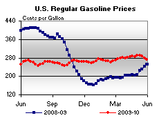 | 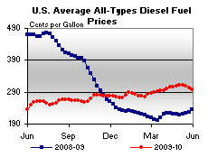 | ||||||
| Retail Data | Changes From | Retail Data | Changes From | ||||
| 05/31/10 | Week | Year | 05/31/10 | Week | Year | ||
| Gasoline | 272.8 | Diesel Fuel | 298.0 | ||||
| Spot Prices (Cents Per Gallon*) | |||||||||||||||||||||||||||||||||||
| 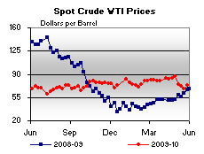 | 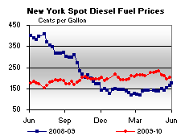 | ||||||||||||||||||||||||||||||||||
| 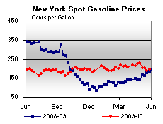 | 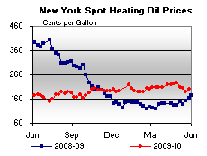 | ||||||||||||||||||||||||||||||||||
|
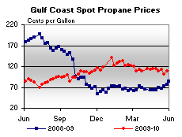 | ||||||||||||||||||||||||||||||||||
| *Note: Crude Oil WTI Price in Dollars per Barrel. | |||||||||||||||||||||||||||||||||||
| Stocks (Million Barrels) | |||||||
| 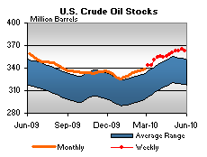 | 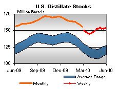 | ||||||
| 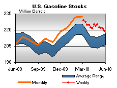 | 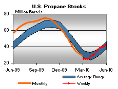 | ||||||
| Stocks Data | Changes From | Stocks Data | Changes From | ||||
| 05/28/10 | Week | Year | 05/28/10 | Week | Year | ||
| Crude Oil | 363.2 | Distillate | 153.0 | ||||
| Gasoline | 219.0 | Propane | 41.690 | ||||